| font-size |
Define el tamaño de la fuente. Al cambiar el tamaño de la fuente, también se actualizan los tamaños de las unidades relativas al tamaño de la fuente , como , , etc |
xx-small, x-small, small, medium, large, x-large, xx-large, xxx-large, larger, smaller, <length>, <percentage>, math |
font-size: 16px; |
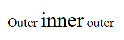 |
Font-size |
| border-radius |
Redondea las esquinas del borde exterior de un elemento. Puedes establecer un solo radio para crear esquinas circulares o dos para crear esquinas elípticas. |
radius, top-left-and-bottom-right, top-right-and-bottom-left, top-left, top-right, bottom-right, bottom-left |
border-radius: 10px; |
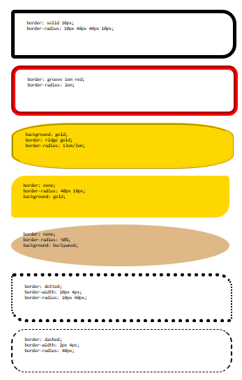 |
border-radius |
| display |
Establece si un elemento se trata como un bloque o un cuadro en línea y el diseño utilizado para sus hijos, como diseño de flujo , cuadrícula o flex |
block, inline, flow, flow-root, table, flex, grid, ruby, list-item, table-row-group, table-header-group, table-footer-group, table-row, table-cell, table-column-group, table-column, table-caption, ruby-base, ruby-text, ruby-base-container, ruby-text-container, contents, none, inline-block, inline-table, inline-flex, inline-grid/td>
| display: flex; |
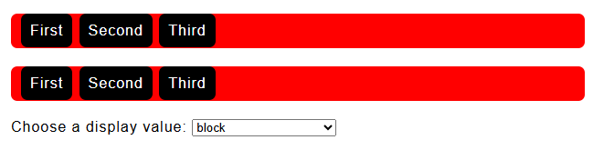 |
display |
| flexbox (display: flex;) |
Define un modelo de caja CSS optimizado para el diseño de interfaces de usuario y la disposición de elementos en una sola dimensión. En el modelo de diseño flexible, los elementos secundarios de un contenedor flexible pueden disponerse en cualquier dirección y ajustar su tamaño |
row, column, wrap, justify-content, align-items |
display: flex; justify-content: center; |
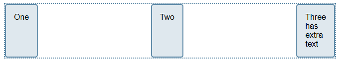 |
flexbox |
| position |
Define cómo se posiciona un elemento en un documento. Las propiedades , , y determinan la ubicación final de los elementos posicionados. |
static, relative, absolute, fixed, sticky |
position: absolute; |
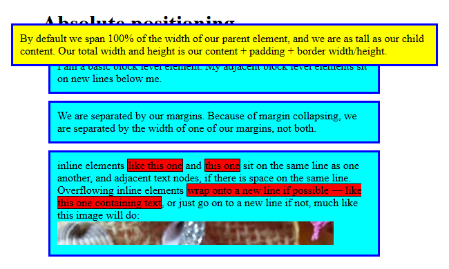 |
position |
| box-shadow |
añade efectos de sombra alrededor del marco de un elemento. Puedes configurar varios efectos separados por comas. Una sombra de cuadro se describe mediante los desplazamientos X e Y con respecto al elemento, el radio de desenfoque y propagación, y el color |
<color>, <length>, <offset-x>, <offset-y>, <blur-radius>, <spread-radius>, inset |
box-shadow: 10px 5px 5px red; |
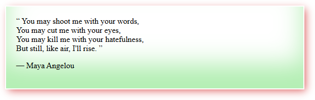 |
box-shadow |
| overflow |
Establece el comportamiento deseado cuando el contenido no cabe en el cuadro de relleno del elemento (se desborda) en dirección horizontal y/o vertical |
visible, hidden, clip, scroll, auto. |
overflow: visible; |
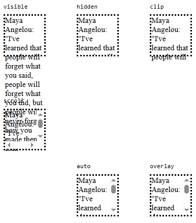 |
overflow |
| z-index |
Establece el orden z de un elemento posicionado y sus descendientes, o elementos flexibles y de cuadrícula. Los elementos superpuestos con un índice z mayor cubren a los que tienen uno menor. |
Auto, <integer> |
z-index: auto; |
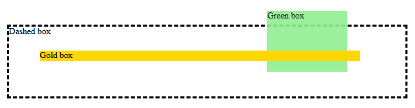 |
z-index |
| opacity |
Define la opacidad de un elemento. La opacidad es el grado en que se oculta el contenido detrás de un elemento y es lo opuesto a la transparencia |
<alpha-value>: 0 (totalmente transparente), cualquier número entre 0 y 1 (translúcido), 1 (completamente opaco). |
opacity: 0.5; |
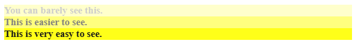 |
opacity |
| margin |
Establece el área de margen en los cuatro lados de un elemento. |
<length>, <percentage>, auto |
margin: 10px; |
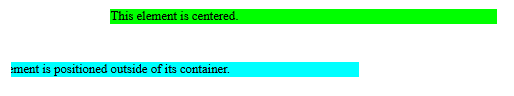 |
margin |
| padding |
establece el área de relleno en los cuatro lados de un elemento a la vez. |
<length>, <percentage>, |
padding: 1em; |
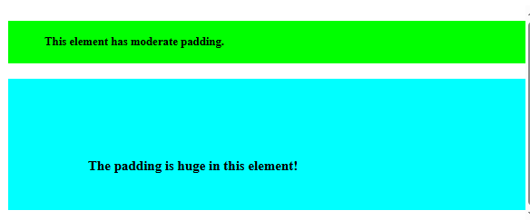 |
padding |
| align-content |
establece la distribución del espacio entre y alrededor de los elementos de contenido a lo largo del eje transversal de un flexbox , o el eje de bloque de un elemento de nivel de bloque o cuadrícula .. |
normal, start, center, endflex-start, flex-end, baseline, first baseline, last baseline, space-between, space-around, space-evenly, stretch, safe, unsafe |
align-content: center; |
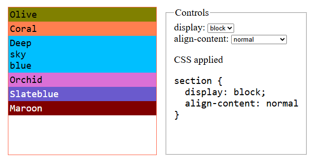 |
align-content |
| tab-size |
Se utiliza para personalizar el ancho de los caracteres de tabulación (U+0009). |
number, length |
tab-size: 10px; |
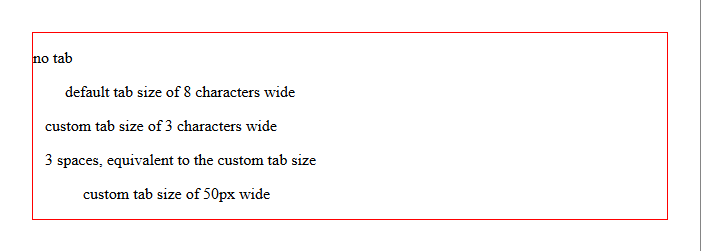 |
tab-size |
| flood-color |
Define el color de la subregión primitiva de filtro actual en los elementos y dentro de un . Si está presente, anula el atributo del elemento. |
<color> |
flood-color: red; |
|
flood-color |
| inline-size |
Define el tamaño horizontal o vertical del bloque de un elemento, según su modo de escritura. Corresponde a la propiedad o a la propiedad, según el valor de. |
<length>, <percentage>, auto, max-content, min-content, fit-content, none |
inline-size: 300px; |
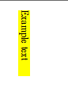 |
inline-size |